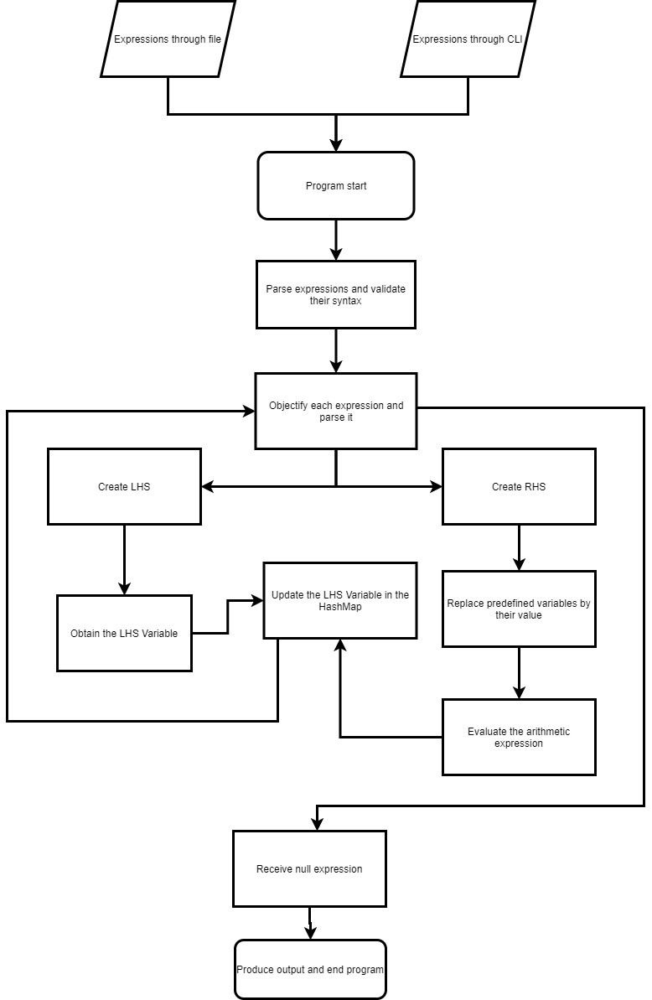

Name: Text-Calc
Text-Calc
Text-Calc is a program that is built upon JavaScript, using the Node.JS runtime. It is used to mimic the behavior of an interpreter.
It takes arithmetic expressions as an input and evaluates them to provide the values of each variable that declared in the expressions provided.
It supports 2 fashions of taking input for the arithmetic expressions to produce a result, namely
- Command Line Interface(CLI)
- Text File containing the input expressions.
Structure of program
Text-Calc mainly highly emphasizes on OOPs concepts of using classes and objects, and their almost all of the functionalities, to acheive it's aim.
Files
Inbuilt
- package.json: This file defines the details about a program that is built in Node.JS. It stores various information about the project, such as it's name, version, description, scripts to execute, test, or deploy it, author's name, license, dependencies, etc.
Demo
- calculate.txt: This file is a sample input for a file that the program would be using as an input to evaluate it and produce an output.
Entry point
- index.js: This file is the entry point of the program. It is launched from here. In this file it checks whether the user has provided a file as an arguemnt or not. If the user did, it would evaluate the files that the user has passed as argument while running the program. Or else, it starts a Command Line Interface to receive the input arithemtic expressions by prompting the user for each expression, until an expty string is passed to it, to show the output. Another function of this file is to check the input syntax of the expressions that are provided to it, it does this by using matching regex strings.
classes
- arithmeticExpression.js: This file contains a class that costructs an object for a particular arithemetic expression that is provided to it as a string. This class further contains methods that allow it to solve the particular expressions using a stack as an approach. Also, predefined variables are stored in an hashmap in order to keep track of their values, since if they appear in an arithmetic expression, they can be replaced by their value to evaluate it.
- input.js: This file contains a class that takes an input of the complete set of arithemetic expressions that have to be evaluated and finally provide the resultant values for each variable declared within them. It does this by breaking the input format line-by-line and then further create an object using the arithmeticExpression class, for each line. It also keeps a record of the variables that are present in all the expressions, by parsing them and adding them to a hashmap.
- variable.js: This file contains a class that allows us to create an object that stores it's name and it's value.
Activity Diagram

Classes
- input: This class is responsible for receiving the expressions, convert them to a list and parse them one by one.
```
params:
- contents(String)
- commands(Array)
- storedVairables(Array)
functions:
- constructor() - This method initilzes the input object.
- addContents(contents) {} - This function is used to parse the input contents break the string using carriage return(splitting lines), and defining them as an array called commands.
- addCommands() - This is a private function that is called within the addContents function in order to split the expressions, parse them, and create lhs and rhs.
- findOutput() - This function marks the end of the input process, that receives the expressions, and starts evaluating their output.
- getVariables(command) - This is a private function that is called by findOutput. It parses the expression provided to it, analyses the variables present in it, and refers them to the storedVariables HasMap and them by their current values.
```
- arithmeticExpression: This class is responsible for evaluation of an arithemetic expression.
```
params:
- expression(String)
- solution(String)
- stack(Array)
- sign(String)
- num(Number)
functions:
- constructor() - This method initilzes the arithemticExpression object.
- solve() - This method starts the evaluation of the arithmetic expression, using a stack. It checks for each character, if an operator is found it adds it to the stack, else it checks if the character is a digit or not.
- isDigit(digit) - The method returns whether the character string(digit) is a numeric digit or not.
```
- variable: This class is an implementation for modelling of a variable in algebra and arithemetic expressions. It stores the name and value of the variable and provides functions to update the value at any point.
```
params:
- name(String)
- value(String)
functions:
- constructor() - This method initilies the variable object.
- setValue(value) - This function sets the value of the particular variable. It allows updating the value at any given point in the program.
- getValue() - This funciton returns the current value of the variable that was set.
```